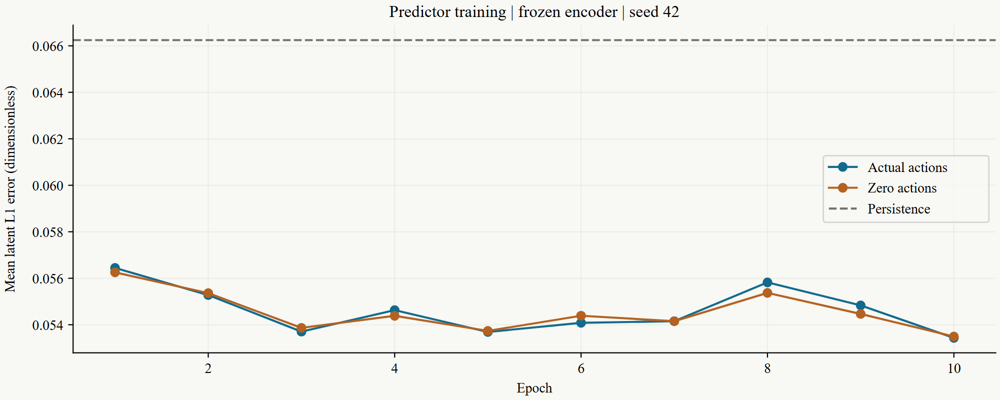
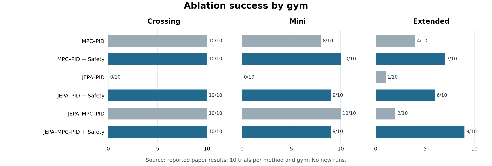
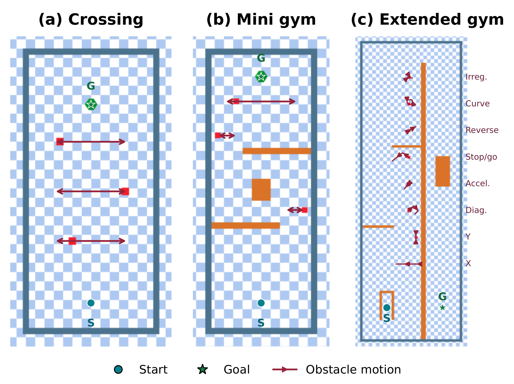
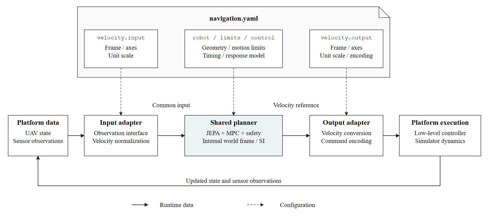

Crossing
Selected successful JEPA-MPC-PID + safety run, seed 1004, from paper_150_run_0001. Recorded-pose replay with obstacle motion from the original log.
JEPA-assisted predictive planning for UAV navigation. A reviewer companion to the implementation, simulation setup and reported results.
cd reproducibility python -m pip install -e ".[gym]" jeptera-gym crossing --output outputs/crossing
The released runner uses JEPA-MPC-PID + safety layer. The gym clips below replay selected original paper runs; running the released runner produces separate evidence. Short smoke checks validate integration, not mission completion.
The source package is distributed separately. All setup instructions are included below.
Core installation does not install a simulator. Use Python 3.11 for the gyms.
cd reproducibility
python3.11 -m venv .venv
source .venv/bin/activate
python -m pip install --upgrade pip
python -m pip install torch==2.8.0 --index-url https://download.pytorch.org/whl/cpu
python -m pip install -e .
python -B check_release.py
python -m pip install -e ".[gym]"
jeptera-gym --help
jeptera-gym --self-check
The explicit PyTorch command installs CPU-only wheels to avoid CUDA downloads.
On Windows use py -3.11 -m venv .venv and .venv\Scripts\Activate.ps1.
PyBullet 3.2.7 may need a local C++ build on Windows; Ubuntu/WSL is recommended.
Core-only checks work without PyBullet.
The gym extra pins gym-pybullet-drones to revision
e712698a05a80728b06572819dcf044596707754 and PyBullet to 3.2.7. Git is required
to fetch the upstream source. Editable installation reflects local code changes.
A normal python -m pip install . also packages model weights and YAML.
For native simulators follow adapters.md. ROS 2 Jazzy requires its Python 3.12 environment, separately from the gym Python 3.11 venv. The offline check validates models, observation context, MPC and safety; it does not establish navigation success.
Run commands from reproducibility unless stated otherwise. Install the core with python -m pip install -e .. The three model directories under agentic_uav/artifacts/ are required: corridors_v1_actual_seed42, corridors_v1_zero_seed42, and joint_action_ramps_seed42. Runners use agentic_uav.models.inference.ARTIFACTS; model integrity checks remain active. Choose a new --output directory for each run.
Install the MuJoCo extra with python -m pip install -e ".[mujoco]". The adapter requires tau-intelligence/MuJoCo-drones-gym at commit ca170dc6760d422e47ef46fb3af46f8cd20410eb:
git clone https://github.com/tau-intelligence/MuJoCo-drones-gym.git
git -C MuJoCo-drones-gym switch --detach ca170dc6760d422e47ef46fb3af46f8cd20410eb
python -m pip install -e ./MuJoCo-drones-gym
python -m agentic_uav.scripts.run_mujoco_navigation --output runs/mujoco_transfer
python -m agentic_uav.scripts.render_mujoco_run runs/mujoco_transfer
The runner uses native MuJoCo dynamics and PID with an air start. --static-pillar adds the validated cylinder scenario. Render only after the navigation run completes.
On Ubuntu 24.04, install Gazebo Harmonic, ROS 2 Jazzy, ros-jazzy-ros-gz and ros-jazzy-sensor-msgs-py. Source ROS, create a Python 3.12 venv with --system-site-packages, and install python -m pip install -e ".[gazebo]" so rclpy and message types remain available. gazebo/gazebo_transfer.sdf includes the X4 hexacopter, sensors, and world; no external model download is needed. Source ROS in each ROS shell and use the same ROS_DOMAIN_ID and GZ_PARTITION values throughout.
Shell 1:
source /opt/ros/jazzy/setup.bash
export ROS_DOMAIN_ID=42 GZ_PARTITION=agentic_transfer
gz sim -s --headless-rendering gazebo/gazebo_transfer.sdf
Shell 2, with the same environment:
ros2 run ros_gz_bridge parameter_bridge --ros-args -p config_file:=$(pwd)/gazebo/gazebo_bridge.yaml
Shell 3, with the same environment, bridges the paused-world stepping service:
ros2 run ros_gz_bridge parameter_bridge /world/agentic_transfer/control@ros_gz_interfaces/srv/ControlWorld
Shell 4, with the same environment and editable core installed:
python -m agentic_uav.scripts.run_gazebo_navigation --output runs/gazebo_transfer
This adapter connects to CARLA-Air's AirSim RPC server on port 41451. Its native dynamics are SimpleFlight, not MuJoCo. Install a CARLA-Air build and its matching airsim Python client using that build's upstream instructions; the archived integration used CARLA-Air v0.1.7. See upstream releases for the native server and matching client. Start a map with a Road_ collision surface. carla/road_initialization.json records a Town10HD road 20 example, not a portable spawn pose.
On Windows, CarlaAir.ps1 copies its AirSimConfig/settings.json into the user Documents/AirSim folder on launch. Back up that template and replace it with the supplied carla/settings.json before launching, otherwise the launcher can overwrite your sensor changes. For other launchers, back up existing AirSim user settings, then place carla/settings.json at the settings location used by that build (commonly ~/Documents/AirSim/settings.json on Linux or %USERPROFILE%\Documents\AirSim\settings.json on Windows). It selects SimMode: Multirotor, SimpleFlight, and JepteraLidar with 37 channels, 40 m range, full vertical field of view, and SensorLocalFrame. Start Town10HD using the upstream launcher (Windows: ./CarlaAir.ps1 Town10HD --no-traffic). Verify RPC before flight. The drone must be disarmed and resting on a road; the preflight rejects an unverified starting contact.
python carla/test_frames.py
python carla/test_backend.py
python carla/test_smoke.py
python carla/smoke_flight.py
python carla/run_planner.py --output runs/carla_transfer
smoke_flight.py is the required native preflight: it checks takeoff, LiDAR, velocity response, road contact, landing, and disarm. The planner refuses to run without a passed carla/smoke_*/result.json.
Use Python 3.11 on Ubuntu with the package's gym extra. The PyBullet drone dependency is pinned to gym-pybullet-drones commit e712698a05a80728b06572819dcf044596707754 in the installer. The runner uses its native velocity PID through AgenticNavAviary.
jeptera-gym --help
jeptera-gym --self-check
jeptera-gym crossing --output runs/crossing
jeptera-gym mini --seed 1004 --output runs/mini
jeptera-gym extended --seed 1004 --max-steps 12000 --output runs/extended
jeptera-gym crossing --gui --config agentic_uav/config/navigation.yaml --output runs/crossing-gui
crossing, mini, and extended select the original crossing_multi, mini_gym, and training_gym scenes. Each output path must be new. The runner writes scene.json, report.json, trace.jsonl, crossing telemetry, and JEPA controller diagnostics. Each trace row contains the drone XYZ and quaternion plus every dynamic obstacle XYZ and quaternion. report.json distinguishes stable landing, contact collision, simulator truncation, and the step limit. The control loop uses LiDAR, the rolling voxel map, JEPA MPC, native velocity PID, and the original takeoff and landing mission planner. Obstacle truth enters only physics and output telemetry.
The package entry point is agentic_uav.gym.run:main. The runner reads ARTIFACTS from agentic_uav.models.inference and expects corridors_v1_actual_seed42/last.pt, corridors_v1_zero_seed42/last.pt, and joint_action_ramps_seed42/original_recalibrated_readout.npz below it. --help avoids simulator imports; --self-check verifies scene conditions without starting PyBullet.
The default planning budget is 0.2 s. On slower CPUs, repeated solver_timeout decisions can hold the drone near its start; inspect the controller diagnostics when navigation stalls. The reviewer videos replay selected successful original ablation logs, not fresh runs of this packaged entry point.
After a run finishes, render from its saved scene.json, trace.jsonl, and report.json:
python -m agentic_uav.gym.render --self-check
python -m agentic_uav.gym.render runs/crossing
python -m agentic_uav.gym.render runs/mini --speed 4 --fps 20
The renderer writes flight.mp4 and poster.png beside the trace and refuses to overwrite either. It uses recorded drone and crossing obstacle poses, without simulator steps or planner calls. The white 3D follow view clips displayed wall segments to the camera window; the inset shows the complete scene layout and crossing lanes. The quadcopter drawing is enlarged to 2 m rotor span for legibility and labeled as such; its recorded position and quaternion and the obstacle dimensions remain unchanged. Default playback is 8× at 20 fps, sampling the 30 Hz trace. System ffmpeg, NumPy, and Matplotlib are required.
Default: agentic_uav/config/navigation.yaml. Select a profile with
jeptera-gym crossing --config profile.yaml --output outputs/custom.
The MuJoCo runner also accepts --config; Gazebo and CARLA use supplied profiles.
| Field | Base value | Meaning |
|---|---|---|
schema_version |
1 |
Validated schema version |
robot.radius_m |
0.15 |
Vehicle collision envelope radius |
robot.safety_margin_m |
0.10 |
Additional geometric clearance |
limits.max_speed_mps |
5.0 |
Maximum reference speed |
limits.max_vertical_speed_mps |
1.0 |
Vertical reference limit |
limits.max_acceleration_mps2 |
2.0 |
Command rate-of-change limit |
limits.min_z_m, max_z_m |
0.05, 40.0 |
Allowed world altitude envelope |
control.frequency_hz |
30 |
Control observation/update frequency |
control.velocity_response_rate_per_s |
[7.4074,7.4074,18.5185] |
Nominal first-order velocity response in XYZ |
control.solver_budget_s |
0.2 |
Computation budget, not prediction horizon |
velocity.input.frame |
world |
Native measured velocity frame |
velocity.output.frame |
world |
Native command frame |
velocity.*.axes |
[x,y,z] |
Axis order/signs; NED uses [y,x,-z] |
velocity.*.scale_to_mps |
1.0 |
Native units to m/s conversion |
velocity.output.encoding |
direction_speed |
Direction XYZ plus speed fraction; adapters may use xyz |
goal.position_tolerance_m |
0.5 |
Goal distance threshold for transfer runners |
goal.speed_tolerance_mps |
0.5 |
Goal speed threshold for transfer runners |
The gym uses its archived takeoff/landing state machine and physical landing criteria. The two goal fields do not replace those mission criteria. Values are the existing base profile, not a new vehicle calibration. The loader rejects unknown/duplicate keys and invalid/nonfinite values. Gym validation requires 30 Hz and the calibrated 5 m/s speed normalization.
State / LiDAR -> input adapter -> map + tracking + JEPA + MPC + safety
|
output adapter -> PID -> vehicle
YAML: geometry, limits, nominal response, frames and units
Prediction uses four 0.2 s steps (0.8 s). Changing solver budget does not change the prediction horizon and does not prove hard real-time operation. YAML does not define sensor extrinsics, RPC ports, ROS topics or native motor PID gains; those belong to simulator settings/adapters. New sensor or vehicle dynamics need validation and may require readout calibration or retraining.
Selected successful JEPA-MPC-PID + safety run, seed 1004, from paper_150_run_0001. Recorded-pose replay with obstacle motion from the original log.
Selected successful JEPA-MPC-PID + safety run, seed 1005, from paper_150_run_0001. Recorded-pose replay with obstacle motion from the original log.
Selected successful JEPA-MPC-PID + safety run, seed 1004, from paper_150_run_0001. Recorded-pose replay with obstacle motion from the original log.
Replay presentation: white backdrop, drone enlarged to 2 m for visibility, playback 4× at 20 fps. Recorded poses and obstacle motion are reused without rerunning physics. These selected successes do not show that all seeds succeeded.
Archived native simulation replay. Air-start transfer; landing was not tested.
Goal reached; 7.63 s simulation time; final error 4.8 cm; command limit 3 m/s; no collision.
Archived native X4 hexacopter integration. Air-start transfer; landing was not tested.
Goal reached; 12.23 s simulation time; final error 4.7 cm; command limit 3 m/s; no collision.
Archived screen recording of CARLA-Air native SimpleFlight, takeoff through landing. No MuJoCo co-simulation.
Navigation-only replay from measured positions. The illustrated drone does not reconstruct takeoff or landing.
Archived replay of measured drone poses in the original map. One route completed without collision; no new robustness claim.
Archived replay of measured drone poses in the original map. One route completed without collision; no new robustness claim.
Archived replay of measured drone poses in the original map. One route completed without collision; no new robustness claim.



The planner core receives normalized state and LiDAR. Its guarded reference reaches the native vehicle controller through an adapter.
YAML supplies vehicle geometry, motion limits, nominal response, coordinate conversion and goal tolerances. It does not replace simulator sensors, PID tuning or adapter code.
Field-by-field YAML reference
Panduan lanjutan untuk menghubungkan simulator baru, memvalidasi frame dan sensor, serta menguji timing kontrol.
Tujuannya: simulator baru memakai JEPA + MPC yang sama melalui adapter dan profil platform. MuJoCo dan Gazebo adalah contoh implementasi; kontrak di bawah berlaku juga untuk CARLA dan simulator lain. Dukungan simulator baru tetap memerlukan kode adapter dan pengujian, bukan cukup mengganti nama di YAML.
Sensor + state native → input adapter → state SI + scan world → voxel / tracking → JEPA prediction → MPC → velocity world XYZ → output adapter → controller velocity native → dinamika / motor Contact native + timestamp → status episode + log evaluasi
Temukan API untuk reset/spawn, state dan attitude, sensor bertimestamp, command kontrol, stepping, contact, serta kamera. Tetapkan di mesin mana server simulator dan proses planner berjalan. ROS bersifat opsional: adapter dapat memakai Python API, ROS, atau transport native.
Pastikan kendaraan memiliki dinamika terbang dan controller velocity. API mobil (throttle/steering/brake) tidak dapat menerima velocity UAV. Mengubah posisi actor langsung hanya menguji integrasi kinematik, bukan tracking motor, PID, atau kemampuan terbang.
Rujukan kode yang sudah ada: agentic_uav/backends/gazebo_ros.py, agentic_uav/planners/navigation_config.py, serta runner platform. Belum ada factory/plugin universal: backend dan runner baru harus dihubungkan eksplisit.
p_planner = S p_native + offset v_planner = S v_native v_body = R_world_from_bodyᵀ v_world R_planner = S_world R_native S_body⁻¹
S menyatakan pemetaan sumbu; skala satuan diterapkan terpisah. R adalah matriks rotasi attitude, bukan sekadar menukar komponen quaternion. Untuk konversi handedness, angular velocity adalah pseudovector: pemetaan ortogonal S memakai det(S) S ω, lalu sesuaikan frame body/world. Uji tanda rotasi dengan gerakan native yang diketahui.
Command planner adalah velocity kontinu world XYZ m/s. Output adapter mengubah frame, urutan sumbu, satuan, lalu encoding sesuai controller native. Jika simulator menerima body FLU, gunakan attitude terkini untuk rotasi; jika menerima target posisi, thrust atau rotor speed, diperlukan controller tracking, bukan mengirim vektor velocity langsung. PID/native stabilizer tetap mengeksekusi command menjadi gerak.
MuJoCo WXYZ → XYZW dan Gazebo world → body hanya contoh. Untuk CARLA/Unreal, verifikasi handedness, tanda yaw, unit dan frame setiap API dari versi terpasang; jangan memakai satu konversi yang diasumsikan cocok untuk semua channel.
Contoh struktur lengkap profil yang dipakai loader saat ini; nilai berikut hanya contoh awal, bukan kalibrasi untuk robot baru. Simpan sebagai profil tersendiri dan hubungkan ke loader pada runner adapter baru. Jangan mengasumsikan flag CLI yang belum diimplementasikan.
schema_version: 1
robot:
radius_m: 0.55
safety_margin_m: 0.1
limits:
max_speed_mps: 3.0
max_vertical_speed_mps: 1.0
max_acceleration_mps2: 1.0
min_z_m: 0.05
max_z_m: 40.0
control:
frequency_hz: 30
velocity_response_rate_per_s: [6.0, 6.0, 10.0]
solver_budget_s: 0.2
velocity:
input:
frame: world
axes: [x, y, z]
scale_to_mps: 1.0
output:
frame: body
axes: [x, y, z]
scale_to_mps: 1.0
encoding: xyz
goal:
position_tolerance_m: 0.15
speed_tolerance_mps: 0.15Radius mencakup collision envelope robot; margin adalah clearance tambahan. Ukur respons ±XYZ, delay dan braking dari controller native untuk menentukan response rate dan acceleration limit. Goal dinyatakan tercapai setelah posisi dan speed memenuhi toleransi. Input frame YAML harus sesuai data yang benar-benar diteruskan, bukan frame sebelum adapter.
Schema saat ini belum memuat seluruh sensor extrinsic/decoder, host/port, topic, quaternion convention atau konfigurasi controller native. Parameter itu masih di backend/scene/runner. Menambahkan key YAML tidak otomatis menambah dukungan. Generator scene juga tidak boleh diam-diam menghilangkan tuning; periksa perilaku overwrite sebelum launch.
Model terpasang memiliki normalisasi 5 m/s, interval prediksi 0.2 s, horizon 0.8 s dan kontrol 30 Hz. Mengubah sensor, dinamika atau distribusi aksi dapat memerlukan kalibrasi atau training ulang meski format adapter benar. Solver budget adalah batas waktu komputasi, bukan horizon.
reset episode + history read synchronized state / scan / contact update map and dynamic tracks compute JEPA + MPC command convert and apply native command advance physics / await next timestamp log observation, prediction, command, realized motion, timing repeat until goal / contact / timeout
Simulator synchronous/offline: hitung aksi saat paused, lalu advance langkah fisika yang sesuai periode kontrol; substep fisika boleh lebih cepat. Asynchronous/real-time: fisika tetap berjalan saat solver bekerja, jadi usia observasi, latency command, deadline dan fallback harus dicatat dan ditangani. Keberhasilan offline tidak membuktikan reaktivitas real-time. Jangan menyamakan sim-time dengan wall-time atau melambatkan obstacle untuk menyembunyikan delay.
Jika gagal, bedakan error adapter/sensor, tracking controller, prediksi JEPA, pemilihan MPC, dan timeout. Jangan langsung tuning cost planner untuk menutupi salah frame. Transfer lurus membuktikan koneksi dasar; keandalan avoidance perlu skenario dan pengulangan tersendiri.
Adapter dapat memakai API native atau ROS. Samakan versi client/server, petakan state, sensor dan command, lalu tetapkan pemilik clock. Untuk simulator tanpa dinamika UAV, integrasikan simulator penerbangan dan controller melalui co-simulation dengan frame, timestamp, dan contact yang konsisten. Memindahkan actor langsung hanya menguji integrasi kinematik.
Dokumentasikan versi simulator, adapter, profil efektif dan checkpoint hash. Catat seed, goal/contact, command dan respons, waktu simulasi dan waktu komputasi. Gunakan rekaman native bertimestamp. Bedakan validasi koneksi, tracking, avoidance dan real-time performance.